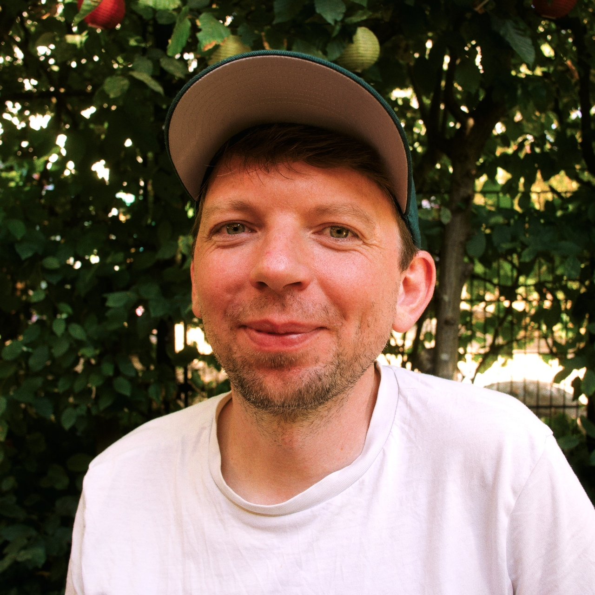

Emanuel Tannert
Web Developer | Frontend, UX, CMS, Administration
-
Frontend & UX
Arguably my strongest point. I recently worked on a few projects with Angular, TypeScript, SCSS and(!) Tailwind, and have collaborated closely with designers and artists for my whole career.
I also built the occasional React or Vue site and I can do vanilla HTML, CSS and JavaScript, too.
Gulp, Webpack, esbuild, SASS, I used them all ...
-
Backend & Linux
I have experience with Node.js, Express, Python, Flask, SQLAlchemy, PHP and MySQL/MariaDB. I even worked as a (small-scale) Linux sysadmin for a while, juggling nginx, Apache php-fpm, MySQL, MariaDB and PostgreSQL configs, systemd units and the odd ansible script.
-
Language & Communication
I'm fluent in english and native in german. I'm used to document and communicate about my work in written form.
-
Learning & Teaching
I love to go through tutorials, docs, manuals or source code and find out how a thing works. I've tried almost every programming language even though I'm not proficient in all of them. I also love to explain stuff to others, even though I didn't have much chance for that recently.
-
MYSTERY PROJECT
- Owner:
- Tick-TS
- Design:
- zigzag
- Frontend:
- Ionic, Angular, Tailwind
- Backend:
- Java
- Time:
- ??/2024–03/2025
Advanced Angular 16 app written against a custom Java backend. Can't talk about many details for this one; the main part was a completely user-configured widget area. Custom Java Backend. I contributed to the frontend and communicated with design.
-
nextmuseum.io
- Owner:
- Museum Ulm, Kunststiftung NRW oder wie die heißen
- Design:
- Future Forms
- Frontend:
- Angular, Tailwind
- Backend:
- Supabase
- Time:
- 10/2023–??/2024
My first Angular project. It was open source on GitHub for a while, but the owners took it private.
-
z-bau.com
- Owner:
- Z-Bau
- Design:
- unfun
- Frontend:
- WordPress Template, CSS and Vanilla JS
- Backend:
- WordPress
- Time:
- 2015–2024
Love the brutalist design paying tribute to the Z-Bau as a building. Maintained by me alone after my resignation from unfun. Relaunched in 2025 by stefanendres.com and menschmaschine.studio.
-
sophiaschulzmusic.com
- Owner:
- Sophia Schulz
- Design:
- Complex Pleasures
- Frontend:
- WordPress Template, CSS and Vanilla JS
- Backend:
- WordPress
- Time:
- 2023
Modern portfolio website for cellist Sophia Schulz
-
emanueltannert.com
Hey, I just made this website in 3 days. Cool, huh?
Please email me at hi (at) emanueltannert (dot) com
Emanuel Tannert
Schreyerstraße 23
90443 Nürnberg